02-opencv-上
两个机器视觉概述
机器视觉是人工智能正在快速发展的一个分支。简单说来，机器视觉就是用机器代替人眼来做测量和判断。机器视觉系统是通过机器视觉产品(即图像摄取装置，分CMOS和CCD两种)将被摄取目标转换成图像信号，传送给专用的图像处理系统，得到被摄目标的形态信息，根据像素分布和亮度、颜色等信息，转变成数字化信号;图像系统对这些信号进行各种运算来抽取目标的特征，进而根据判别的结果来控制现场的设备动作。
OpenCV是一个基于BSD许可（开源）发行的跨平台计算机视觉库，可以运行在Linux、Windows、Android和Mac OS操作系统上。它轻量级而且高效——由一系列 C 函数和少量 C++ 类构成，同时提供了Python、Ruby、MATLAB等语言的接口，实现了图像处理和计算机视觉方面的很多通用算法。
面临的挑战
视角变化
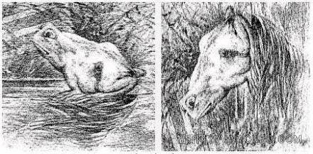
光照变化
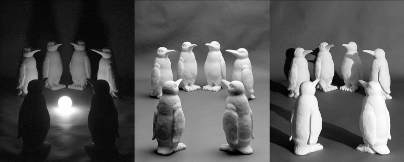
尺寸变化
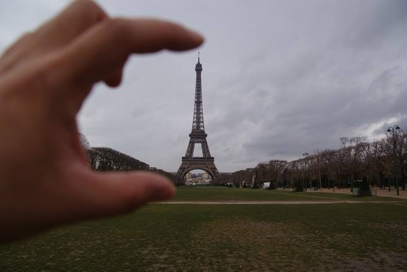
形态变化
背景混淆
遮挡
类内物体的外观差异
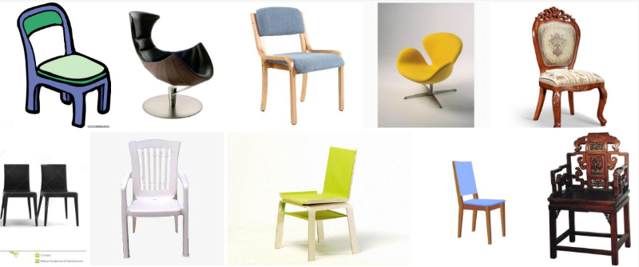
Opencv入门案例
读取图片

本节我们将来学习,如何使用opencv显示一张图片出来,我们首先需要掌握一条图片读取的api
示例代码如下:
写入文件
刚才我们知道,如何读取文件,接下来,我们来学习如何将内存中的图片数据写入到磁盘中!
暂时我们还没有学习,如何直接代码构建一张图片,为了演示,我们先读取一张图片,然后再将它写入到文件中,后面我们会学习如何直接内存中构建一张图片
理解像素

当我们将一张图片不断放大之后,我们就可以看到这张图片上一个个小方块,这里面的每一个小方块我们就可以称之为像素点! 任何一张图片,都是有若干个这样的像素所构成的!
操作像素
为了便于大家能够理解像素,我们现在手工来创建一张图片,例如我们使用np.zeros这样的函数可以创建一个30x40的矩阵,那个这个矩阵其实就可以表示一张图片,矩阵中每一个元素都是一个像素点,每个像素点又由BGR三部分组成,这里我们需要强调一下Opencv中,颜色空间默认是BGR不是RGB,所以我们想表示红色需要使用(0,0,255),想表示绿色需要(0,255,0)
下面我们就来操作图片,在图片的正中央增加一根红色的线!
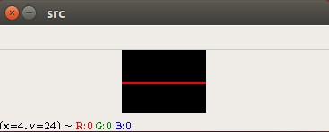
这里我直接给出示例代码,然后我们来看一下运行效果吧!
就这样我们的图片正中间就多了一根红色的线
Opencv图像处理基础
图片的几何变换
图片剪切
正如我们前面所学到的,图片在程序中表示就是一个矩阵,我们要想操作图片,只需要操作矩阵元素就可以了.
接下来,我们要来完成图片的剪切案例,其实我们只需要想办法截取出矩阵的一部分即可!
在python中,矩阵的截取是很容易的一件事!例如如下代码
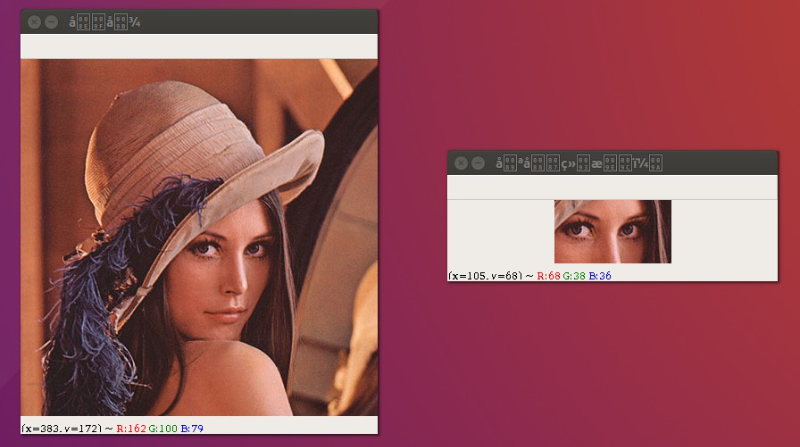
图片镜像处理
图片的镜像处理其实就是将图像围绕某一个轴进行翻转,形成一幅新的图像. 我们经常可以通过某个小水坑看到天空中的云, 只不过这个云是倒着的! 这个就是我们称为的图片的镜像!
下面我们来看这样一个示例吧!我们将lena这张图片沿着x轴进行了翻转
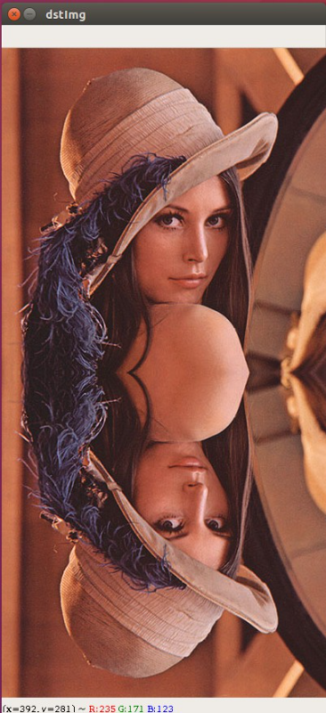
如果我们想在一个窗口中显示出两张图片,那么我们就需要知道图片的宽高信息啦!
如何获取呢? 看下面的示例代码:
知道了上述信息之后,我们就可以按照如下步骤实现啦!
实现步骤:
- 创建一个两倍于原图的空白矩阵
- 将图像的数据按照从前向后,从后向前进行绘制
代码实现
图片缩放
对于图片的操作,我们经常会用到,放大缩小,位移,还有旋转,在接下来的课程中,我们将来学习这些操作!
首先,我们来学习一下图片的缩放
关于图片的缩放,常用有两种:
- 等比例缩放
- 任意比例缩放
要进行按比例缩放,我们需要知道图片的相关信息,我们可以通过
图片缩放的常见算法:
- 最近领域插值
- 双线性插值
- 像素关系重采样
- 立方插值
默认使用的是双线性插值法,这里我们给出利用opencv提供的resize方法来进行图片的缩放
图片操作原理
我们在前面描述过一张图片,在计算机程序中,其实是用矩阵来进行描述的,如果我们想对这张图片进行操作,其实就是要对矩阵进行运算.
矩阵的运算相信大家在前面课程的学习中,已经学会了,下面我们来给大家列出常见的几种变换矩阵
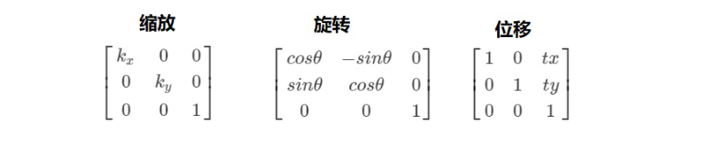
这里我给大家演示的是图片的位移操作,将一个矩阵的列和行看成坐标系中的x和y我们就可以轻易的按照前面我们所学过的内容来操作矩阵啦!
图片移位
刚才我们采用的是纯手工的方式来操作图片,其实我们完全没必要那样做,opencv中已经帮我们提供好了相关的计算操作,我们只需提供变换矩阵就好啦!
下面是位移的示例代码:
图片旋转
图片的旋转其实也是很简单的,只不过默认是以图片的左上角为旋转中心
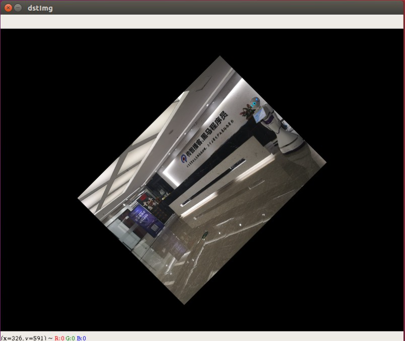
图片仿射变换
仿射变换是在几何上定义为两个向量空间之间的一个仿射变换或者仿射映射（来自拉丁语，affine，“和…相关”）由一个非奇异的线性变换(运用一次函数进行的变换)接上一个平移变换组成。
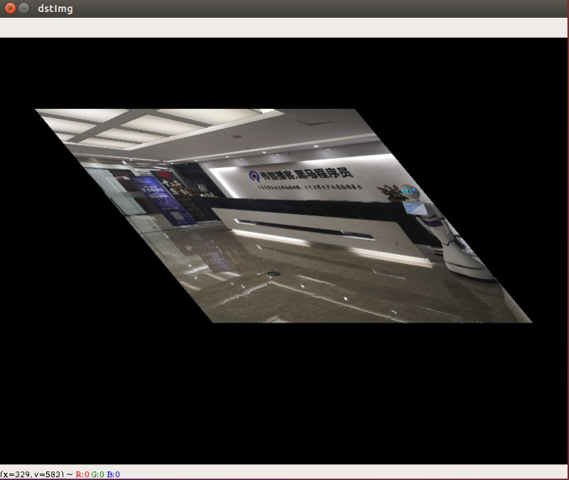
示例代码
图像金字塔
图像金字塔是图像多尺度表达的一种，是一种以多分辨率来解释图像的有效但概念简单的结构。一幅图像的金字塔是一系列以金字塔形状排列的分辨率逐步降低，且来源于同一张原始图的图像集合。其通过梯次向下采样获得，直到达到某个终止条件才停止采样。我们将一层一层的图像比喻成金字塔，层级越高，则图像越小，分辨率越低。
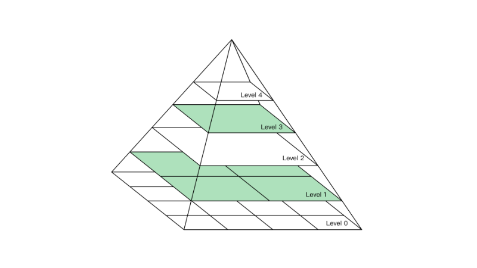
降低图像的分辨率,我们可以称为下采样
提高图像的分辨率,我们可以称为上采样
下面我们来测试一下采用这种采样操作进行缩放和我们直接进行resize操作他们之间有什么差别!
我们可以看到,当我们对图片进行下采样操作的时候,即使图片变得非常小,我们任然能够看到它的轮廓,这对后面我们进行机器学习是非常重要的一步操作
,而当我们直接使用resize进行操作的时候,我们发现图片似乎不能完全表示它原有的轮廓,出现了很多的小方块!
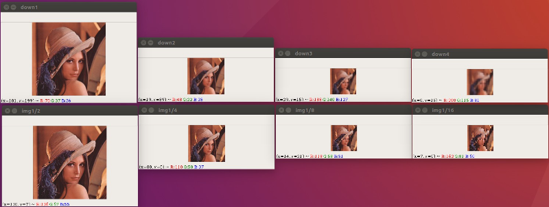
下面这里是我们当前案例的示例代码
图像特效
图像融合
图像融合,即按照一定的比例将两张图片融合在一起!例如下面图一图二经过融合之后形成图三!
执行这样的融合需要用到opencv提供的如下api
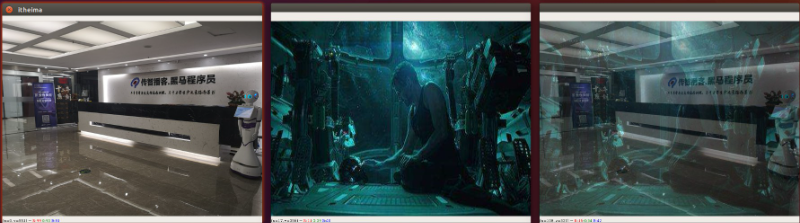
灰度处理
一张彩色图片通常是由BGR三个通道叠加而成,为了便于图像特征识别,我们通常会将一张彩色图片转成灰度图片来进行分析,当我们转成灰色图片之后,图片中边缘,轮廓特征仍然是能够清晰看到的,况且在这种情况下我们仅需要对单一通道进行分析,会简化很多操作!
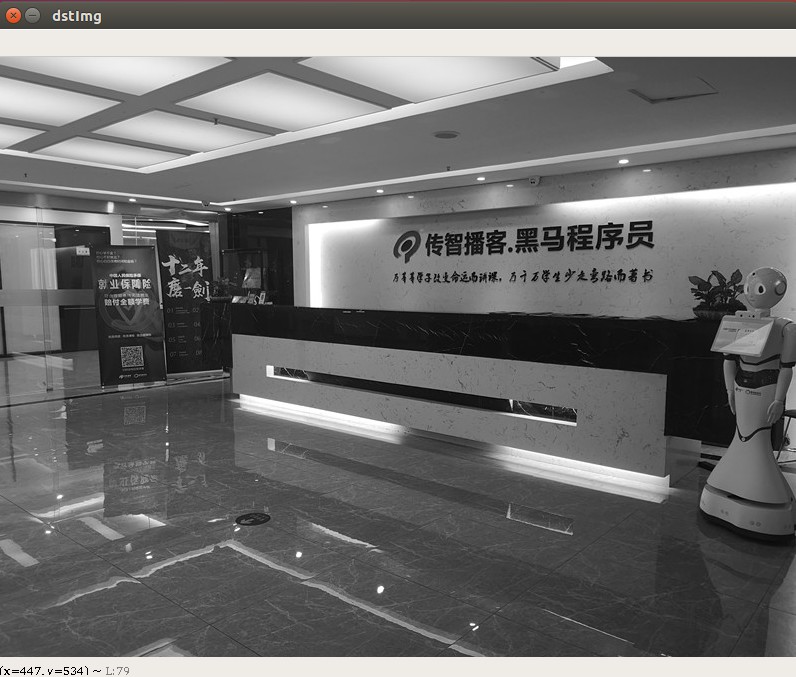
示例代码
原理演示
方式一: gray = (B+G+R)/3
方式二: 利用著名的彩色转灰色心理学公式: Gray = R*0.299 + G*0.587 + B*0.114
颜色反转
灰图反转
例如在一张灰度图片中,某个像素点的灰度值为100, 然后我们进行颜色反转之后,灰度值变为255-100 = 155 , 从下图我们可以看出,进行颜色反转之后,整张图片看起来非常像我们小时候所看到的胶卷底片!
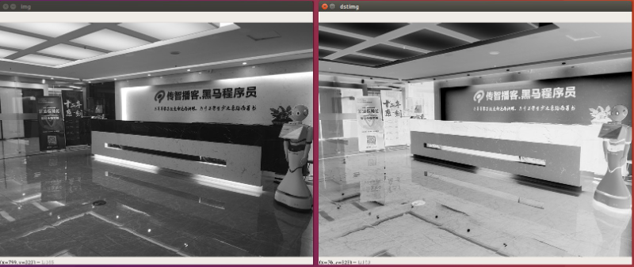
彩图反转
学会了前面灰度图片的反转,下面我们进一步来学习彩色图片的反转. 相对于灰度图片,彩色图片其实只是由3个灰度图片叠加而成,如果让彩色图片进行颜色反转,我们其实只需要让每个通道的灰度值进行反转即可!
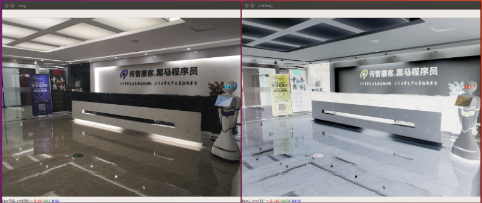
马赛克效果
马赛克指现行广为使用的一种图像（视频）处理手段，此手段将影像特定区域的色阶细节劣化并造成色块打乱的效果，因为这种模糊看上去有一个个的小格子组成，便形象的称这种画面为马赛克。其目的通常是使之无法辨认。
下面,我们来介绍一下实现马赛克的思路!
假设我们将要打马赛克的区域按照4x4进行划分,我们就会得到如下左图的样子!
接下来我们要干的就是让这个4x4块内的所有像素点的颜色值都和第一个像素点的值一样.
经过运算之后,我们整个4x4块内的所有像素点就都成了黄色! 从而掩盖掉了原来的像素内容!
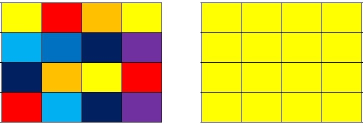
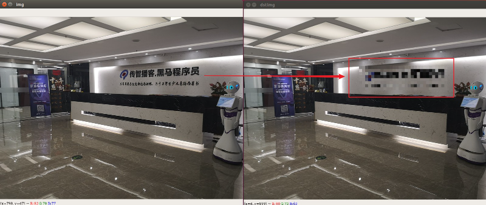
毛玻璃效果
毛玻璃的效果和我们前面讲过的马赛克效果其实是非常相似的, 只不过毛玻璃效果是从附近的颜色块中,随机的去选择一个颜色值作为当前像素点的值!
我们还是以4x4的块大小为例,当我们去遍历每个像素点的时候, 当前像素点的颜色值,我们随机从它附近4x4的区域内选择一个颜色值作为当前像素点的值!
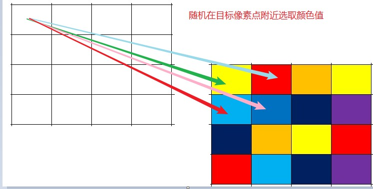
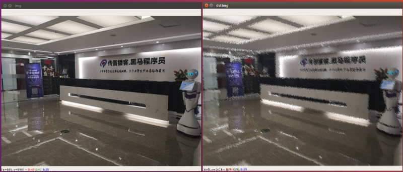
图片浮雕效果
梯度
前面我们做过一个毛玻璃效果的图片, 其实原理很简单对吧,我们只需要让当前像素点的颜色和附近像素点的颜色一致就可以了! 这样带来的效果其实是图片变得模糊.
那么模糊图片和清晰图片之间的差异是什么呢? 从视觉角度来讲, 图像模糊是因为图像中物体的边缘轮廓不明显,就好比一个近视的同学,摘下眼镜看东西,整个世界的轮廓都是模糊的. 再进一步理解就是物体边缘灰度变化不强烈,层次感不强造成的! 那么反过来, 如果物体轮廓边缘灰度变化明显些, 层次感强些图像不就是清晰一些了吗?
这种灰度变化明不明显强不强烈该如何定义呢 ? 我们学过微积分, 微分就是求函数的变化率,即导数(梯度). 其实梯度我们可以把它理解为颜色变化的强度, 更直白一点说梯度相当于是2个相邻像素之间的差值!
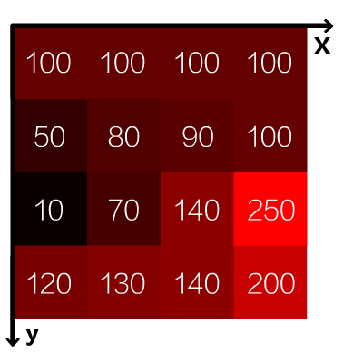
我们先看第一行数据, 在X轴方向上,颜色值都为100,我们并没有看到任何的边缘
但是在Y轴方向上, 我们可以看到100和50之间有明显的边缘,其实这个就是梯度
浮雕效果相信大家都有比较熟悉,在opencv中我们想要实现浮雕效果,只需套用如下公式即可:
其中,相邻像素值之差可以体现边缘的突变或者称为梯度
末尾加上120只是为了增加像素值的灰度.
当然,在这个运算的过程中,我们还需要注意计算结果有可能小于0或者大于255
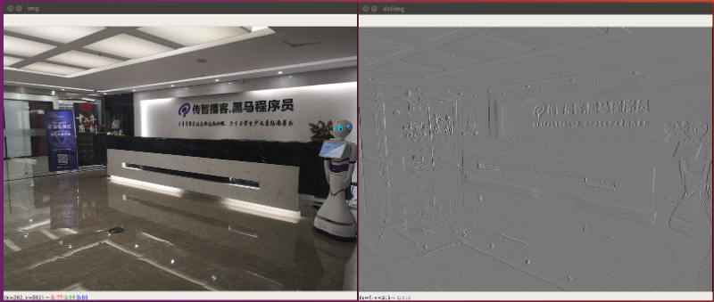
绘制图形
在这之前,我们学过的所有操作,其实都是在原图的基础上进行修改! 现在假设我们想在原图上绘制一些标记或者轮廓,那么我们就需要来学习一下opencv给我们提供的相应API,在这些API中,常见的有绘制直线,绘制圆,绘制矩形
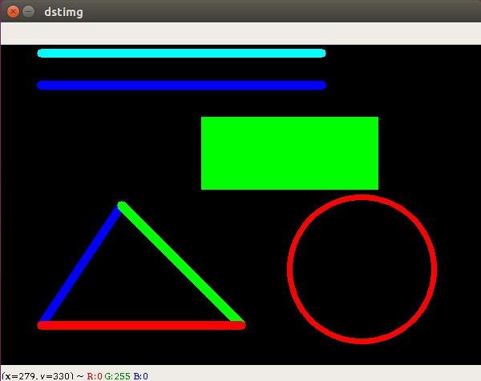
文字图片绘制
在图片上绘制文本,我们需要用到
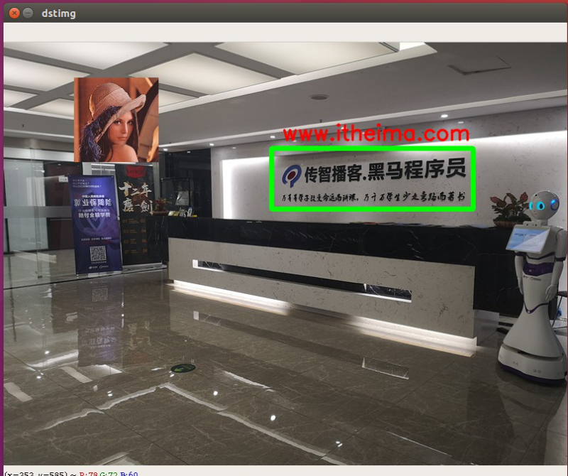
示例代码
注意: opencv不支持中文显示,若想显示中文,需要额外安装中文字体库
图片美化
亮度增强
亮度增强，其实就是将每个颜色值增大一点点
例如： color = color + 50 即可调亮图片
color = color - 50 即可调暗图片
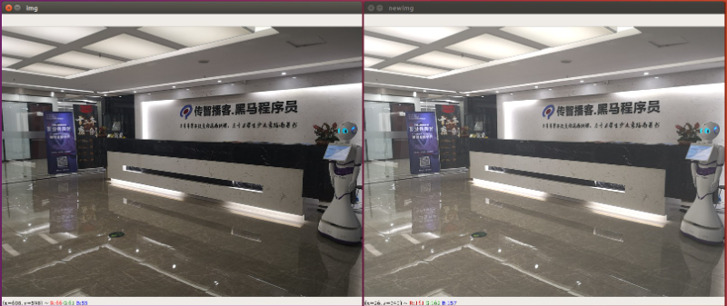
代码实现
灰度图片
直方图
统计每个灰度值出现的概率
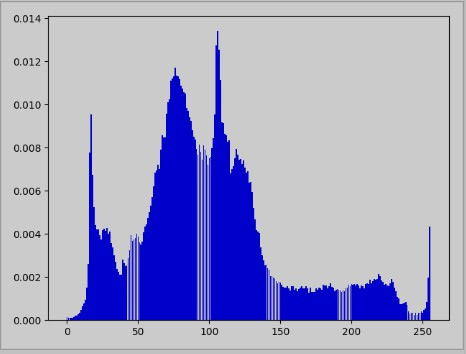
示例代码
备注: 使用matplotlib绘制直方图有两种方式
直方图均衡化
直方图均衡化是将原图象的直方图通过变换函数修正为均匀的直方图，然后按均衡直方图修正原图象。图象均衡化处理后，图象的直方图是平直的，即各灰度级具有相同的出现频数，那么由于灰度级具有均匀的概率分布，图象看起来就更清晰了。
经过直方图均衡化处理之后,我们整个图像的颜色变化就是一种平滑变化的状态
原始直方图 -- 均衡化直方图的 变换函数 ： 累积概率图
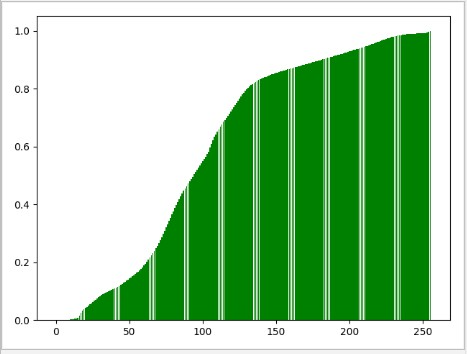
下面我们来看一下灰色图片经过直方图均衡化处理之后的对比
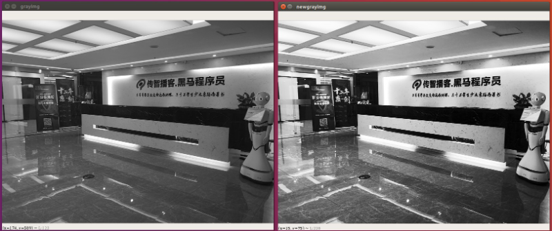
这里是均衡化前后图像直方图的对比
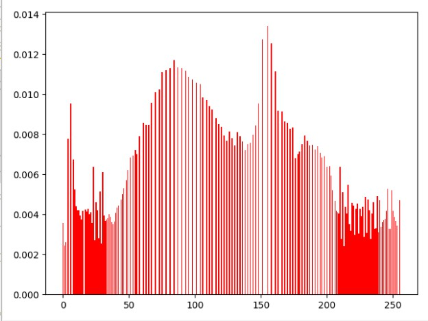
示例代码
彩色图片
直方图
在前面,我们计算灰度图片的直方图时,我们只需要统计灰色值出现的概率就可以了,现在我们要处理的是彩色图片,所以我们需要将(B,G,R)三种颜色值取出来,单独计算每种颜色的直方图
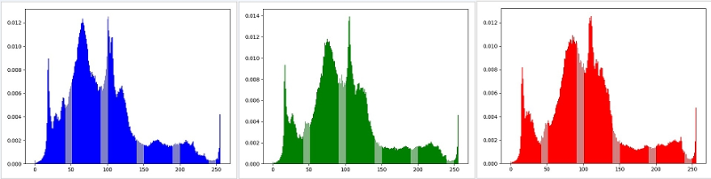
代码实现
直方图均衡化
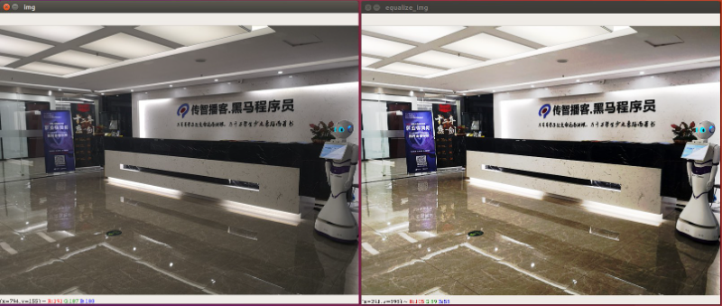
示例代码
视频处理
视频分解图片
在后面我们要学习的机器学习中,我们需要大量的图片训练样本,这些图片训练样本如果我们全都使用相机拍照的方式去获取的话,工作量会非常巨大, 通常的做法是我们通过录制视频,然后提取视频中的每一帧即可!
接下来,我们就来学习如何从视频中获取信息
ubuntu下摄像头终端可以安装: sudo apt-get install cheese 然后输入cheese即可打开摄像头
实现步骤:
- 加载视频
- 获取视频信息
- 解析视频
HSV颜色模型
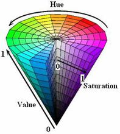
HSV(Hue, Saturation, Value)是根据颜色的直观特性由A. R. Smith在1978年创建的一种颜色空间, 也称六角锥体模型(Hexcone Model)。
这个模型中颜色的参数分别是：色调（H），饱和度（S），明度（V）
色调H
用角度度量，取值范围为0°～360°，从红色开始按逆时针方向计算，红色为0°，绿色为120°,蓝色为240°。它们的补色是：黄色为60°，青色为180°,品红为300°；
饱和度S
饱和度S表示颜色接近光谱色的程度。一种颜色，可以看成是某种光谱色与白色混合的结果。其中光谱色所占的比例愈大，颜色接近光谱色的程度就愈高，颜色的饱和度也就愈高。饱和度高，颜色则深而艳。光谱色的白光成分为0，饱和度达到最高。通常取值范围为0%～100%，值越大，颜色越饱和。
明度V
明度表示颜色明亮的程度，对于光源色，明度值与发光体的光亮度有关；对于物体色，此值和物体的透射比或反射比有关。通常取值范围为0%（黑）到100%（白）。
结论:
- 当S=1 V=1时，H所代表的任何颜色被称为纯色；
- 当S=0时，即饱和度为0，颜色最浅，最浅被描述为灰色(灰色也有亮度，黑色和白色也属于灰色)，灰色的亮度由V决定，此时H无意义；
- 当V=0时，颜色最暗，最暗被描述为黑色，因此此时H(无论什么颜色最暗都为黑色)和S(无论什么深浅的颜色最暗都为黑色)均无意义。
注意: 在opencv中,H、S、V值范围分别是[0,180]，[0,255]，[0,255]，而非[0,360]，[0,1]，[0,1]；
这里我们列出部分hsv空间的颜色值, 表中将部分紫色归为红色
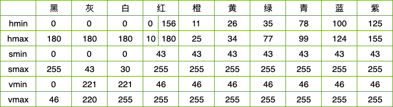
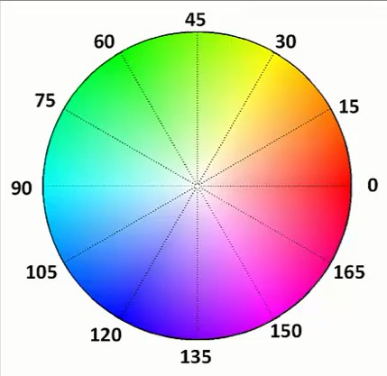
判断当前是白天还是晚上
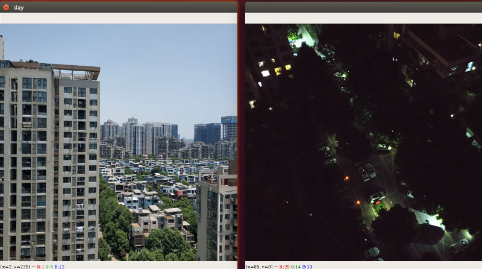
实现步骤
- 将图片从BGR颜色空间,转变成HSV颜色空间
- 获取图片的宽高信息
- 统计每个颜色点的亮度
- 计算整张图片的亮度平均值
注意,这仅仅只能做一个比较粗糙的判定,按照我们人的正常思维,在傍晚临界点我们也无法判定当前是属于晚上还是白天!
颜色过滤
在一张图片中,如果某个物体的颜色为纯色,那么我们就可以使用颜色过滤inRange的方式很方便的来提取这个物体.
下面我们有一张网球的图片,并且网球的颜色为一定范围内的绿色,在这张图片中我们找不到其它颜色也为绿色的图片,所以我们可以考虑使用绿色来提取它!
图片的颜色空间默认为BGR颜色空间,如果我们想找到提取纯绿色的话,我们可能需要写(0,255,0)这样的内容,假设我们想表示一定范围的绿色就会很麻烦!
所以我们考虑将它转成HSV颜色空间,绿色的色调H的范围我们很容易知道,剩下的就是框定颜色的饱和度H和亮度V就可以啦!
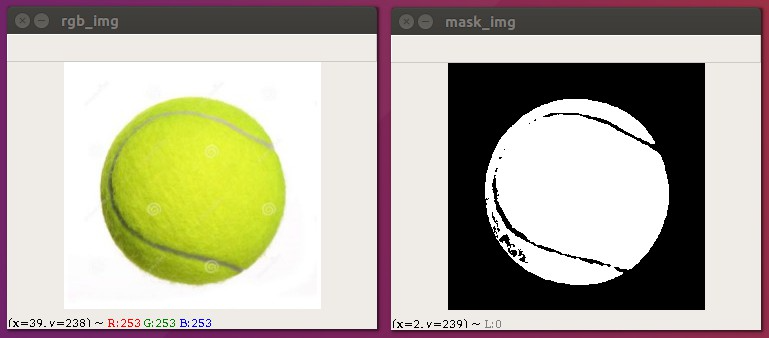
实现步骤:
- 读取一张彩色图片
- 将RGB转成HSV图片
- 定义颜色的范围,下限位(30,120,130),上限为(60,255,255)
- 根据颜色的范围创建一个mask
替换背景案例
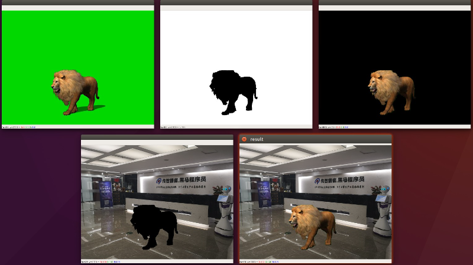
实现步骤
1. 从绿幕图片中过滤出绿幕
2. 将狮子从绿幕中抠出来
3. 在itheima图片上抠出狮子的位置
4. 将狮子和黑马图片进行相加得到最终的图片
图像的二值化
图像二值化（ Image Binarization）就是将图像上的像素点的灰度值设置为0或255，也就是将整个图像呈现出明显的黑白效果的过程。
在数字图像处理中，二值图像占有非常重要的地位，图像的二值化使图像中数据量大为减少，从而能凸显出目标的轮廓。
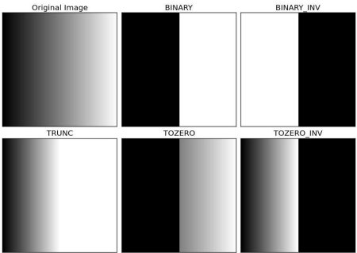
THRESH_BINARY | 高于阈值改为255,低于阈值改为0 |
THRESH_BINARY_INV | 高于阈值改为0,低于阈值改为255 |
THRESH_TRUNC | 截断,高于阈值改为阈值,最大值失效 |
THRESH_TOZERO | 高于阈值不改变,低于阈值改为0 |
THRESH_TOZERO_INV | 高于阈值该为0,低于阈值不改变 |
简单阈值
自适应阈值
我们使用一个全局值作为阈值。但是在所有情况下这可能都不太好，例如，如果图像在不同区域具有不同的照明条件。在这种情况下，自适应阈值阈值可以帮助。这里，算法基于其周围的小区域确定像素的阈值。因此，我们为同一图像的不同区域获得不同的阈值，这为具有不同照明的图像提供了更好的结果。
除上述参数外，方法cv.adaptiveThreshold还有三个输入参数：
该adaptiveMethod决定阈值是如何计算的：
- cv.ADAPTIVE_THRESH_MEAN_C：该阈值是该附近区域减去恒定的平均Ç。
- cv.ADAPTIVE_THRESH_GAUSSIAN_C：阈值是邻域值减去常数C的高斯加权和。
该BLOCKSIZE确定附近区域的大小和Ç是从平均值或附近的像素的加权和中减去一个常数。
THRESH_OTSU
采用日本人大津提出的算法,又称作最大类间方差法,被认为是图像分割中阈值选取的最佳算法,采用这种算法的好处是执行效率高!
在使用Otsu方法时，要把阈值设为0